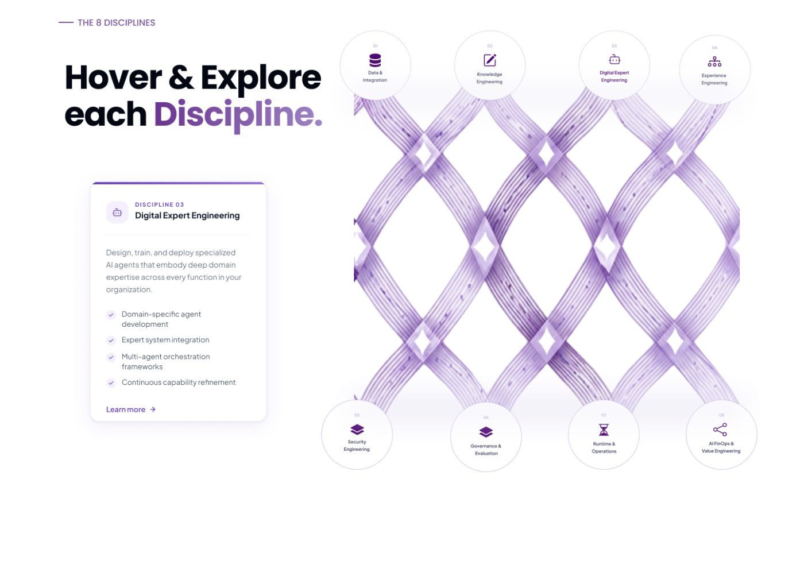

One neutral grammar for every case study.
Components are shown with Purple Fabric's real content, taken from the existing page. Where the project has no such content, the slot is marked as empty rather than filled. Three surfaces, no project colour, no accent rules.
I rebuilt an enterprise AI homepage around the buyer's questions
The homepage explained the platform's components before its value. I rebuilt it around the questions a first-time buyer has to get answered.
The rebuilt homepage scrolling — hero, impact numbers, operating model, into the eight disciplines.
UX & Product Designer
Intellect Design Arena
IA, messaging, visual design
Figma, Miro
Purple Fabric is an enterprise AI platform sold to financial institutions. Its homepage led with vocabulary and architecture, and named neither its audience nor the platform's function above the fold.
- Audited the existing homepage section by section
- Benchmarked seven enterprise AI platforms
- Rebuilt the information architecture and wrote the copy deck
- Designed the full homepage across six sections
Delivered, with measurement still to come
A new information architecture, a copy deck, and a full homepage design across six sections — hero, operating model, disciplines, governance, solutions and close.
The page now names the audience in the first five words and states the platform's function above the fold, where it previously named neither.
A deep, custom nav with no equivalent on any competitor site, replaced with the five-item structure every benchmarked platform uses.
Live metrics to be captured post-launch against the four success questions above.
Where a project does have measured numbers, the same slot takes the reference's metric form — a large figure, one line of meaning, and a provenance line naming the source. That provenance line stays empty rather than invented.
Metric slot — filled only from a real measurement
Provenance line, e.g. “Based on post-test interviews”
Second metric slot
Source named, or the card is not used
The homepage explained the platform's components before its value.
A first-time viewer had to decode the platform's own vocabulary before finding a sentence about what it does, or who it is for.
Why it matters
Has to decode the platform's vocabulary before deciding whether to keep reading.
A deep, custom structure with no equivalent on any competitor site.
Without financial services framing, it reads as another generic enterprise AI platform.
Can a first-time visitor say what Purple Fabric does, and who it is for, without leaving the page?
Without it, users might perceive Purple Fabric as just another generic enterprise AI platform.
A simpler IA reduces cognitive load. Sticking to standard layouts helps users identify and navigate the site with ease.
It helps users identify where Purple Fabric comes in to help enterprises. People buy solutions to their problems.
Nine sections in, nine sections out — reordered around the buyer
Nothing was cut. The same nine sections were resequenced so the page names its audience and states the platform's function before it explains the architecture.
Participant quote, verbatim, one or two sentences.
Role, context
Purple Fabric was an audit and benchmark project with no participant interviews, so this component would not appear on that page. It belongs to SayPlay and NutriHealth, which have real quotes from therapists, caregivers and students.
Opening a discipline card, and the lifecycle and governance sections that follow it.
Finding the balance between illustrative and technical
The eight disciplines were the hardest part of the page to design. Literal weave imagery was beautiful but said little; a purely functional card grid scanned well and lost the brand. Both extremes failed for opposite reasons.

Direction three: a functional card grid. Highly scannable, visually anonymous.

The direction that shipped — scannable structure, with the fabric metaphor carried by illustration and copy.
The homepage is the entry point, not the whole job
This heading is the real one from the existing page. Reflection copy carries over unchanged — the component only changes how it sits on the page, as plain type in a two-column measure rather than inside a bordered card.
An AAC platform for children with cerebral palsy
Background values in SayPlay. Purple Fabric goes 8 → 3, NutriHealth 15 → 3.
Gradient heroes. Project colour survives only inside product screens.
Serif moment per case study — the reframe. Quotes and captions aside.